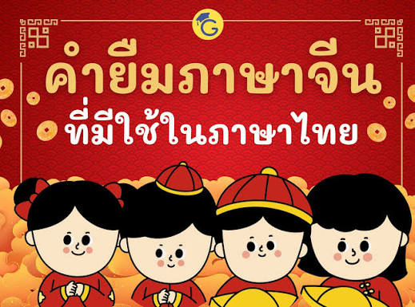

คำยืมภาษาจีน

ภาษาไทยมีคำยืมมาจากภาษาต่างประเทศหลายภาษา เช่น ภาษาเขมร ภาษาจีน ภาษาชวา ภาษาบาลี ภาษาละติน ภาษาสันสกฤต ภาษาอังกฤษ การยืมคำภาษาจีนมาใช้ในภาษาไทยนั้น มักยืมมาจากภาษาจีนแต้จิ๋วและภาษาจีนฮกเกี้ยนมากกว่าภาษาจีนสาขาอื่นเนื่องจากชาวจีนแต้จิ๋วและชาวจีนฮกเกี้ยนได้อพยพเข้ามาอยู่ในประเทศไทยก่อนชาวจีนกลุ่มอื่น คำภาษาจีนที่ยืมมาใช้ในภาษาไทยมีคำที่เกี่ยวข้องกับภาษาและวรรณคดี ความเชื่อ ศาสนา ประเพณี ฯลฯ คำภาษาจีนที่รวบรวมมานี้มีปรากฏในพจนานุกรม ฉบับราชบัณฑิตยสถาน พ.ศ. ๒๕๔๒ ซึ่งคัดเลือกมาเฉพาะคำที่อ้างอิงถึงภาษาจีน โดยอาจแบ่งได้เป็น ๒ กลุ่ม คือ๑. กลุ่มที่มี (จ.) กำกับ บอกที่มาของคำ เช่น กวยจี๊ ยี่ห้อ ๒. กลุ่มที่มีข้อความอ้างอิงว่ามาจากจีน เช่น ขงจื๊อ ฮกเกี้ยน